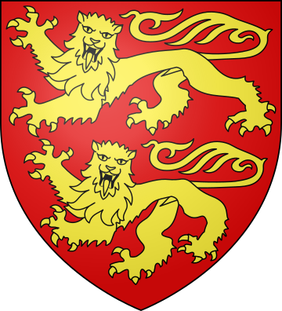
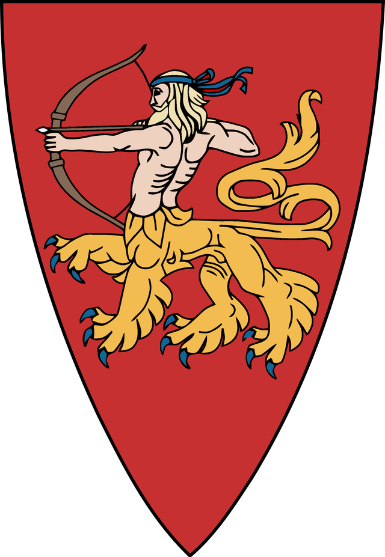

Henry I
Henry I of England (21 September 1068 - 1 December 1135)
King of England
He ruled from, 1100 until his death in 1135
He was the fourth son of William the Conqueror

William Adelin
William Ætheling (August 1103 – 25 November 1120)
the son of Henry I of England
was the only direct heir apparent to the english throne

Stephen of Blois
Stephen of Blois (1092 or 1096 – 25 October 1154)
Was the fourth son of Stephen-Henry, Count of Blois, and Adela, daughter of William the Conqueror.
Was placed into the court of his uncle Henry I of England, Stephen rose in prominence and was granted extensive lands.

Matilda
Empress Matilda (7 February 1102 – 10 September 1167) also known as the Empress Maude
The daughter of King Henry I of England
She married the future Holy Roman Emperor Henry V
After the death of Heinrich V married Geoffrey V, Count of Anjou